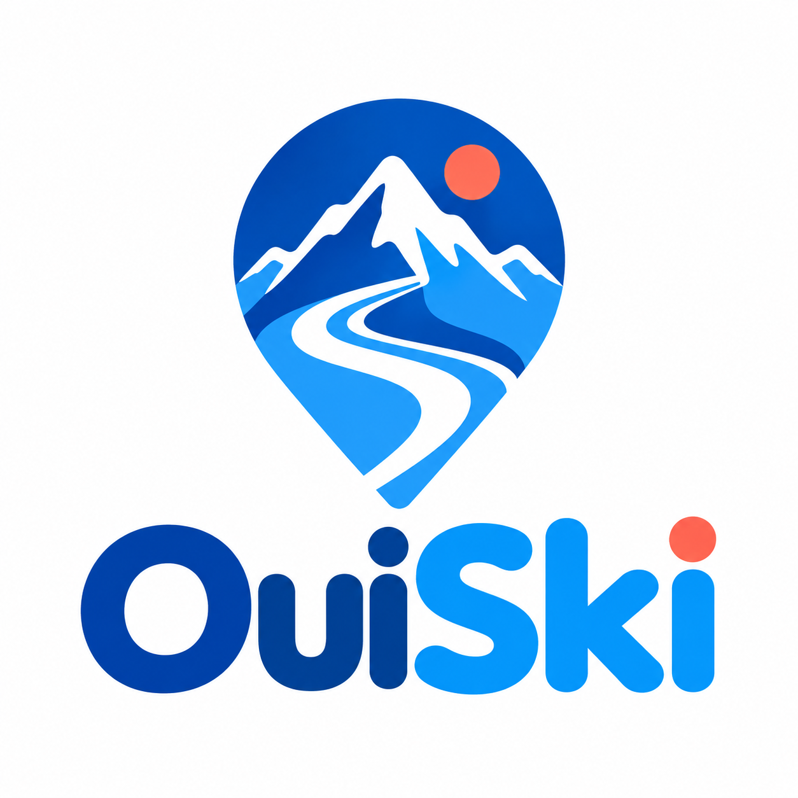

OuiSki, votre futur GPS ski
Explorez les cartes des stations de ski en France, en Suisse et dans le monde. OuiSki est une application en développement : testez la première version à Vars et choisissez une station pour découvrir sa carte.
Chargement des lieux de Vars…
Repères d’accueil ESF et ESI. Les rendez-vous des cours restent à confirmer avec votre école.
Emplacements publiés par Vars · ESF et Vars · ESI.
Votre trajet
Explorez la carte de cette station. Les fiches de cours, l’annuaire et les itinéraires OuiSki sont pour l’instant disponibles dans le test de Vars uniquement.
Le calcul utilise votre départ. Adresse recherchée via IGN ; coordonnées transmises à Valhalla pour le trajet, sans enregistrement dans OUISKI.
Les lieux de Vars
Restaurants, hébergements et services : choisissez un lieu pour préparer votre trajet.
Les données disponibles
193 lieux importés. Huit adresses de restaurants recoupées le 8 octobre 2026. Les entrées exactes restent à vérifier sur place.
Les tracés à ski proviennent d’OpenStreetMap. Les connexions et sens de circulation ne sont pas encore validés pour le guidage.
Consulter le plan officiel de Vars · Carte interactive publiée par VarsInventaire non exhaustif. Positions publiées, accès à vérifier. Sources : office de tourisme de Vars et OpenStreetMap, relevé du 7 octobre 2026.
Votre prochain cours
- Date
- Samedi 20 février 2027
- Horaire
- 09 h 00 – 11 h 00
- Cours
- Ski · Cours particulier
- Moniteur
- Alex · Profil fictif
ESF · Centre
Accueil · 81 allée Paul Charlot
Repère d’accueil pour cette démonstration. Le départ exact du cours devra être confirmé par l’école.
Numéro du moniteur : non renseigné dans la démo.
Exemple de convocation. Aucune réservation réelle n’a été créée. Le QR code ouvre cet exemple public. Les fiches personnelles et réservations réelles ne sont pas encore disponibles.